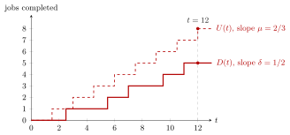

Service Rate¶
Definition¶
Let be the service time of the th job served by a single server, the total service time of the first jobs, and the number of jobs a server would complete in if it worked without interruption. The service rate, or processing rate, of the server is
assuming the limit exists. Then , so the service rate of a single server is . (Here and count service work; the same letter also denotes a busy time elsewhere in the notes.)
Interpretation¶
The service rate is the capacity of the server: the number of jobs per unit time it would complete if it never stood idle. It is a property of the server and the jobs' work, not of the arrivals, and it is an upper bound for the departure rate that the server actually achieves.

The figure is Example 2. The dashed staircase is what a server with service time could do if jobs were always waiting: one completion every time units, so . The solid staircase counts the jobs that really leave. Because only one job arrives every two time units on average, the server is idle part of the time, and grows at the smaller slope : by the server could have completed jobs but has completed .
The relation follows from the same counting argument as for arrivals. The bound holds for any single server, since each departure uses up one service time. Equality in an overloaded queue needs a work-conserving server (Kendall's convention), which never idles while jobs are present.
For an exponential service time , the letter in Kendall's notation, is the rate parameter of the exponential distribution. In the discrete-time models of Week 2 the same role is played by the mean capacity per period, , which decides the sign of the queue drift.
A common slip is to call the observed output rate the service rate. A server that is idle a quarter of the time has ; only in an overloaded queue without blocking does the output reach .
Key Results¶
- for a single server, by the argument of Theorem 4.1.1 applied to the partial sums of the service times.
- The departure rate never exceeds the service rate, . In a queue with and no blocking, the queue grows without bound and .
- Batches and servers (Section 4.1): a server that serves on average jobs per service time has rate , and a station of identical such servers has capacity . This capacity is the denominator of the load .
- Servers with different speeds (Algorithm 3.3.6): a job that requires work takes time at server with rate .
Examples¶
1. Units. A mean service time of minutes hour gives jobs per hour, or job per minute.
2. Capacity is not output. Jobs arrive at times (inter-arrival times alternating , so ) and each needs time units, so . The departure times are , two per four time units, so . By : , since , whereas .
3. Overload. With service time instead, . From the second job on the server is never idle (job 2 starts at and each later job is already waiting when the previous one leaves), so for and . The departure rate is capped by the service rate, and the remaining jobs per time unit pile up.
4. Batches and parallel servers. An oven takes on average minutes per baking cycle and holds on average pizzas. Its service rate is pizzas per hour, and a station with such ovens has capacity pizzas per hour.
Prerequisites¶
Related Concepts¶
Sources¶
- Stochastic Operations Research · Week 3
- N. D. van Foreest, Sample Path Analysis and Simulation of Stochastic Systems, Section 4.1
Aliases: processing rate, service capacity, mu, server capacity, production rate Keywords: \mu = \lim U(t)/t, \mu = 1/\mathbb{E}[S], U_n = S_1 + \dots + S_n, c\mu, \mathbb{E}[C]/\mathbb{E}[S], capacity versus throughput, departure rate Symbols: delta, infinity, lambda, mu, rho, sum
Last updated: 29 October 2026 20:42
Service RateRate StabilityServer LoadServer UtilizationArrival and Departure RatesKendall's NotationQueue DriftExponential DistributionState-Dependent CapacityM/M/1 QueueM/M/c Queue